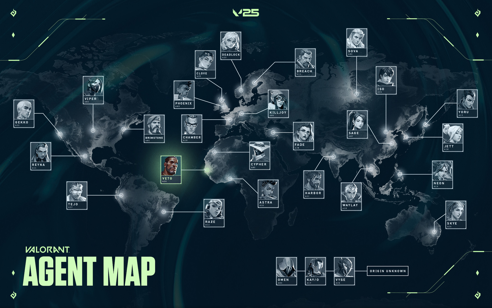
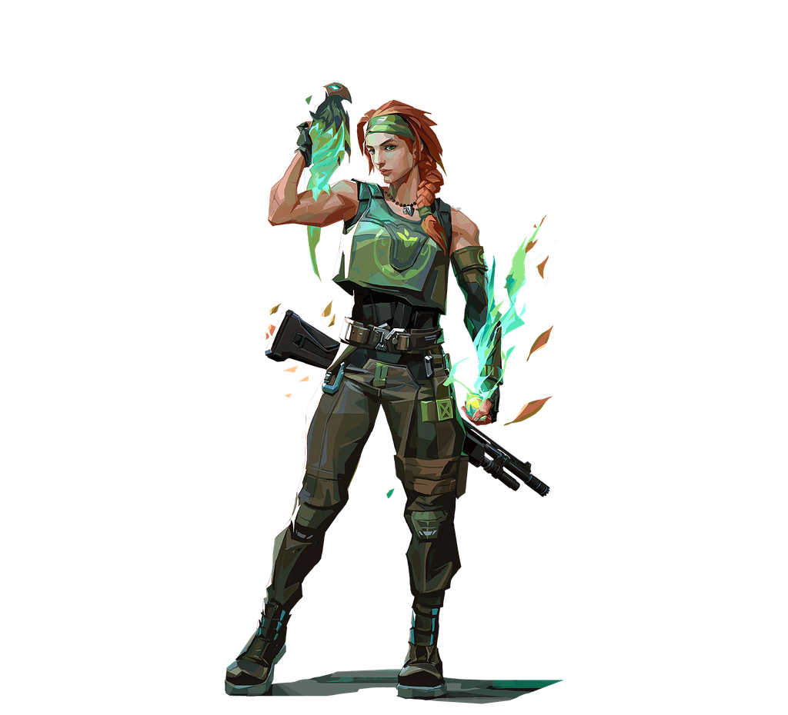
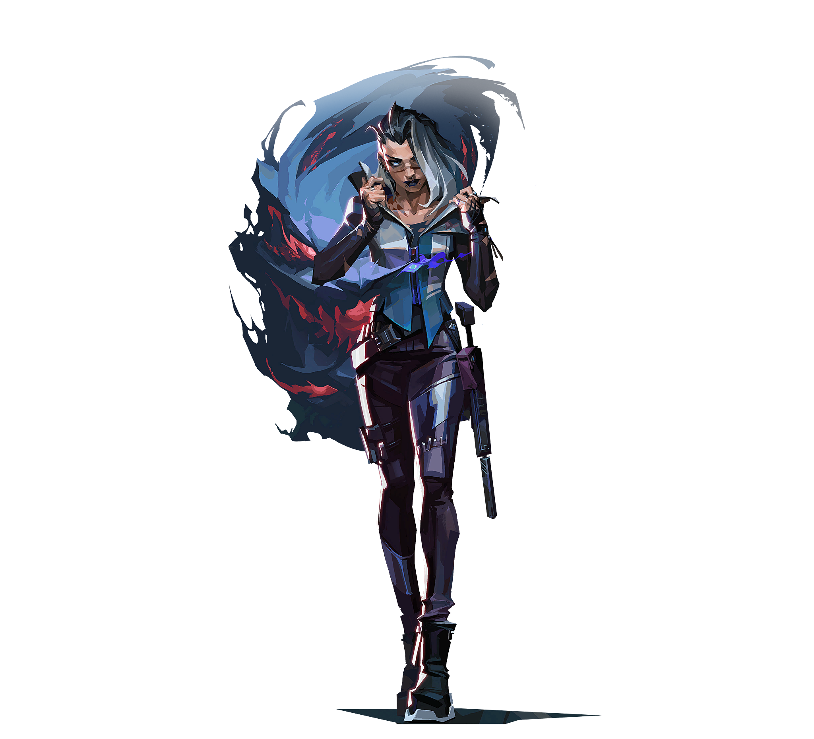
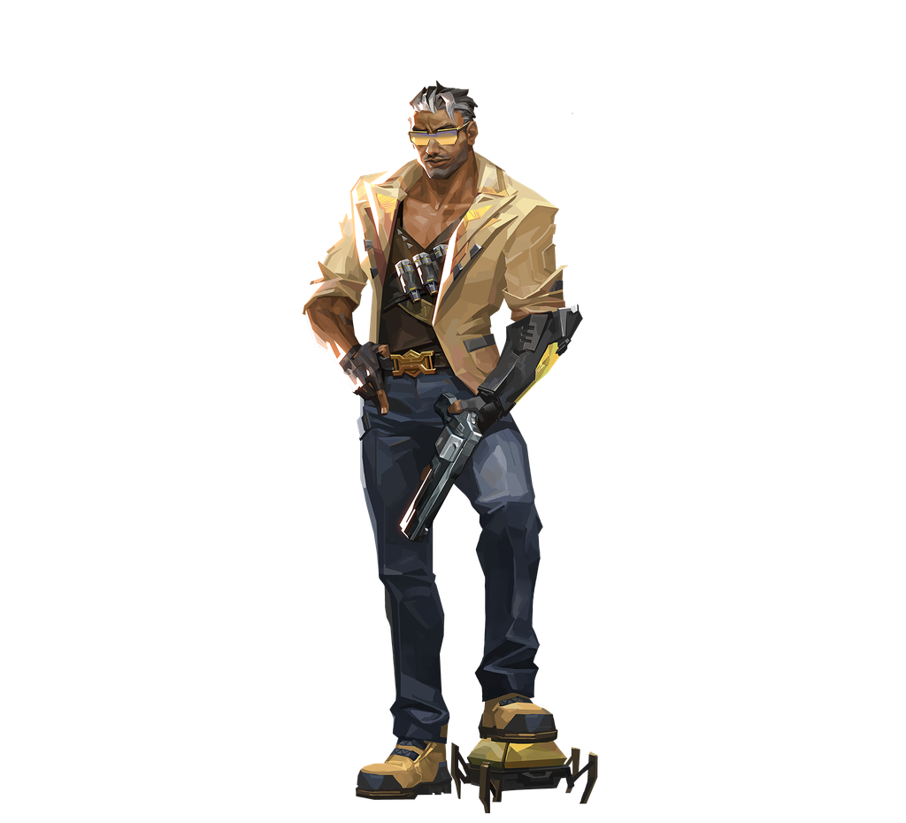
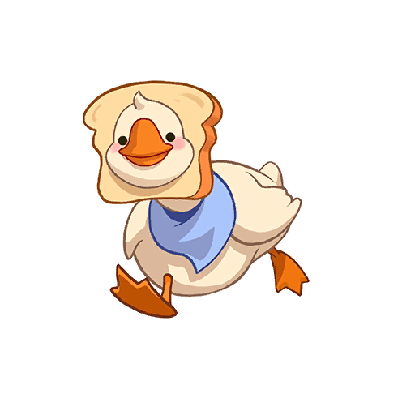

VALORANT//INITIATOR
VALORANT//INITIATOR

⚡ Код:Инициатор ⚡
Skye · Fade · Tejo

🌿 SKYE — ПОВЕЛИТЕЛЬНИЦА ФЛОРЫ
Скай, уроженка Австралии, и ее звериная банда прокладывают путь через враждебную территорию. Благодаря ее творениям, мешающим врагам, и способности исцелять других, команда под предводительством Скай сильнее и в большей безопасности.

🐺 FADE — ОХОТНИЦА ЗА СТРАХОМ
Турецкая охотница за головами Фейд высвобождает силу первобытного кошмара, чтобы выведать вражеские секреты. Настроившись на саму суть ужаса, она выслеживает цели и раскрывает их самые сокровенные страхи, прежде чем сокрушить их во тьме.

💥 TEJO — ИНЖЕНЕР ХАОСА
Ветеран разведывательных операций из Колумбии, Техо, с помощью своей системы баллистического наведения вынуждает противника отступать — или лишает его жизни. Его точечные удары лишают противников равновесия и заставляют их плясать под его дудку.
🧭 Чек-лист инициатора
Все способности Skye, Fade и Tejo — от базовых до ультимейтов
-

-
🌿 SKYE — ВСЕ СПОСОБНОСТИ
- 💚 Regrowth 150💰
УДЕРЖИВАЙТЕ КНОПКУ ОГОНЬ, чтобы исцелить союзников в радиусе действия и в зоне видимости. Можно использовать повторно, пока не закончится запас исцеления. Скай не может исцелять себя 100 ед. здоровья, 20 ед./сек. - 🐅 Trailblazer 300💰
НАЖМИТЕ, чтобы призвать хищника и взять его под контроль. Находясь под контролем, НАЖМИТЕ, чтобы прыгнуть вперед и взорваться сотрясающим взрывом, нанося урон противникам в зоне поражения. 30 урона при прямом контакте, 2.5-4с оглушения. - 🦅 Guiding Light 250💰
НАЖАТЬ, чтобы отправить его вперед. УДЕРЖИВАТЬ НАЖАТИЕ, чтобы направить ястреба в сторону прицела. ПОВТОРНО НАЖАТЬ, пока ястреб в полете, чтобы превратить его в вспышку. Вспышка достигает максимальной мощности через некоторое время после начала полета ястреба.1-2.25с вспышка, 60с перезарядка. - 🥬 Seekers (Ультимейт) ★ 8 очков
НАЖМИТЕ, чтобы отправить трех «Искателей» выследить трех ближайших врагов. Если «Искатель» достигает цели, он приближается к ней и замедляет ее. Враги могут уничтожить «Искателей». 3с близорукость, 5с замедление 60%, 120 ед. здоровья цели.
- 💚 Regrowth 150💰
-

-
🐺 FADE — ВСЕ СПОСОБНОСТИ
- 👁️ Haunt FREE 🎯
НАЖМИТЕ, чтобы бросить. Наблюдатель опустится на землю через заданное время. ПОВТОРИТЕ ДЕЙСТВИЕ, чтобы опустить наблюдателя раньше. При ударе наблюдатель наносит ответный удар, выявляя врагов в зоне видимости и создавая следы ужаса. Враги могут уничтожить наблюдателя.Отметка 3с, следы шагов 12с. - ⛓️ Seize 200💰
НАЖМИТЕ, чтобы бросить. Узел опустится через заданное время. ИСПОЛЬЗУЙТЕ повторно, чтобы опустить узел раньше. Узел разрывается при ударе, приковывая ближайших врагов к месту. Прикованные враги оглушены и ослаблены.Замедление 50%, 4с длительность. - 🐺 Prowler 250💰
НАЖАТЬ на спусковой крючок, чтобы следопыт двинулся вперед. УДЕРЖИВАТЬ на спусковом крючке, чтобы следопыт двигался в направлении прицела. Следопыт будет преследовать первого встреченного врага или следы ужаса, а при столкновении с ним приблизится к нему.Оглушение 3с. - 🌙 Nightfall (Ультимейт) ★ 8 очков
НАЖМИТЕ, чтобы выпустить волну неудержимой энергии кошмара. Враги, попавшие под эту волну, будут отмеченыследами ужаса, оглушены и ослаблены.Отметка всех врагов, следы 12с, оглушение 2с.
- 👁️ Haunt FREE 🎯
-

-
💥 TEJO — ВСЕ СПОСОБНОСТИ
- 🛸 Stealth Drone 300💰
НАЖМИТЕ, чтобы бросить дрон вперед и взять на себя управление его движением. НАЖМИТЕ еще раз, чтобы запустить импульс, который подавляет и обнаруживает пораженных врагов. Подавление на 8 с. - ⚡ Guided Salvo 150💰
НАЖМИТЕ, чтобы выбрать до двух целей на карте. НАЖМИТЕ ALT FIRE, чтобы запустить ракеты, которые самостоятельно направляются к целям и взрываются по прибытии, нанося урон.50–65 урона за залп, 3 залпа за 1,6 с - 💣 Special Delivery 200💰
Граната прилипает к первой попавшейся поверхности и взрывается, нанося урон всем целям, оказавшимся в зоне поражения. НАЖМИТЕ ПКМ, чтобы запустить гранату с одним отскоком.20-35 урона, оглушение 2,5с. - 🔥 Armageddon (Ультимейт) ★ 9 очков
НАЖМИТЕ, чтобы выбрать начальную точку удара. НАЖМИТЕ еще раз, чтобы задать конечную точку и начать атаку, вызвав волну смертоносных взрывов по всему маршруту. НАЖМИТЕ ЛКМ во время выбора точки на карте, чтобы отменить выбор начальной точки.60 за тик, 4 тика за 1 с на сегмент.
- 🛸 Stealth Drone 300💰
Интересные факты о Skye, Fade и Tejo

🌿 Интересности про SKYE
Скай любит ходить в горы, о чем свидетельствует ее карта Home Again// Skye Card.
Кирра — женское имя австралийского происхождения, предположительно имеющее корни в языке аборигенов (югамбе) и означающее «лист», «танцующий лист» или «бумеранг». Распространено на границе Квинсленда и Нового Южного Уэльса. Фостер — английская профессиональная фамилия, означающая «лесничий» или «тот, кто ухаживает за лесом». Происходит от старофранцузского forestier.

🐺 Интересности про FADE
Фейд финансирует кошачий приют рядом со своим домом, куда она иногда приходит по ночам, чтобы посидеть с кошками. Фасоль на подошвах ботинок Fade — отсылка к популярной в Стамбуле культуре ухода за кошками.
Хазал — популярное турецкое женское имя, означающее «осенние листья» или «сухие листья». Эйлетмез — турецкая фамилия, образованная от глагола и означающая «не ждет» или «тот, кто не задерживает».

💥 Интересности про TEJO
Имя Техо происходит от названия традиционного колумбийского вида спорта. Оно отражает его роль, поскольку в этом виде спорта нужно метать металлические диски во взрывающиеся мишени, что перекликается с тем, что персонаж полагается на взрывчатку и мощные способности.
В тизере показано, как он пьет кофе с арепой — это традиционные блюда колумбийской кухни.

🤝 Кто же такие инициаторы по итогу?
Инициаторы создают выгодные позиции, выводя свою команду на спорные участки и оттесняя защитников.
Способности агентов этой роли направлены на то, чтобы инициировать атаки на объекте, выманивать врагов из укрытий и завалов и тем самым помогать команде в бою.